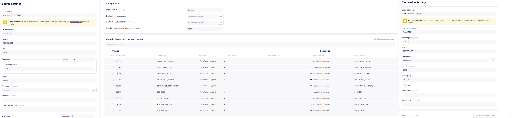

从数采到平台，你可能差一个Airbyte
随着工业互联网规模日渐增长，工业互联网应用对于数据的要求也越来越高。
面对来自现场设备的运行数据、来自控制器的环境数据以及来自上位机的各种应用数据，如何进行快速的整合归集高效的应用成为工业互联网平台的当务之急。考虑到多种数据的采集需求和采集方式都存在差异，如果有一个平台可以实现高层次抽象、可扩展实现，那无疑可以解决我们的问题，Airbyte带着ELT的理念应运而生。
Airbyte是一个开源的数据集成平台，提供了数据迁移的基本骨架，通过用户定制可以完美支持几乎所有的数据迁移需求。
架构介绍
从架构上来看，Airbyte由平台和连接器组成。

平台由一组微服务构建，实现了数据平台的基础设施，包含了UI、配置服务、调度服务、日志和告警等基础功能。
连接器提供了Source到Destination的连接，使用docker提供了连接的可扩展。
主要概念
Connections
实现一次数据迁移的主要载体是一个连接，我们从连接开始。一个连接通常包含了 1）Source Catelog 2）Destination 3）Sync Schedule 4）Sync Mode 5）Transformation
Source Catelog
Source Catelog解决了数据从哪儿来的问题，通过Catelog定义了一组Stream（表），以及Stream中包含的Field（列）。Source可以是一个数据库，也可以是API或者文件。
Destination
Destination解决了数据到哪儿去的问题，可以是数据库、数据仓库、数据湖或者任何想要使用数据的目的地。
Sync Schedule
同步周期可以设置为手动同步、基于时间同步或者基于Cron表达式同步。
这里需要注意基于时间同步的情况，如果定义时间同步周期为“Every 12 Hours”，那么触发同步操作的决定是基于最近一次同步的，考虑如下场景：
1
2
3
41 1月1日10:00 完成首次自动同步
2 1月1日12:00 完成手动同步
3 1月1日22:00 判断距离上次同步未满12小时，不会进行数据同步
4 1月2日0:00 完成第二次自动同步Sync Mode
同步模式主要包含四种，从名称可以很清楚的理解他们的行为：
1
2
3
41， Full Refresh - Overwrite
2， Full Refresh - Append
3， Incremental Sync - Append
4， Incremental Sync - Dedupted HistoryTransformation
数据转换属于可选项，针对某些特定的数据库可以选用Basic Normalize进行数据转换。
Normalization
Airbyte的Normalization从功能上来说属于ELT中的T，基于开源项目实现。
在Airbyte的Source和Destination中传递的原始数据是以json格式组织，如果不做任何处理那么在目标数据库会以一个json列存储所有的数据。数据使用方要么实现自己的transformer进行格式转换，或者使用支持json的API，这在大数据集中无疑又带来了性能问题。
为了解决数据使用方的使用痛点，Airbyte针对常用的几种数据库提供了Normalization的支持，实现方式是提供了一个Raw Table和一个Destination Table。
假设源表名为Cars，表定义如下：
1 | |
经过Airbyte传输到目标数据库后生成的Raw Table的表结构如下：
1 | |
经过Normalization之后的目标表结构如下：
1 | |
支持Basic Normalization的数据库
BigQuery，MSSQL Server，MySQL 8+，Postgres，Redshift，Snowflake。
生产应用
基于本次的数据集成需求：从客户现场上位机的Oracle数据库同步数据到工业互联网平台的Clickhouse，我们制定了如下的数据同步方案：
- 主要骨架基于Airbyte实现，实现Oracle数据库抽取数据并发送到RabbitMQ的功能
- 编码实现消息消费者，完成数据转换和Clickhouse数据库的写入
准备工作
操作系统方面，通过测试的操作系统有Ubuntu 22.04和Window 10 with Docker Desktop，而测试不通过的操作系统为Centos 7。
Airbyte需要在Docker环境下运行，所以在方案实施之前需要准备Docker的运行环境，需要特别注意的是Docker Compose需要V2版本以上。
Airbyte的本地安装只需要下载一个run_ab_platform.sh，并执行 run run_ab_platform.sh -b命令即可，不要按照官方文档下载整个源码库。
如果需要使用Oracle Source需要首先下载airbyte/source-oracle的镜像，使用docker pull命令拉取。
建立连接
建立连接的第一步是选择Source，根据需求我们选择了Oracle Source并填入数据库相关信息；
第二步选择Destination，我们选择了RabbitMQ并填入了相关配置信息；
最后一步选择同步的表，同步方式和同步周期。
通过连接配置，Airbyte会连接Oracle数据库抽取到数据，以json的格式发送到RabbitMQ的消息队列中。接下来就是实现一个消费者实现数据转换和存储。
消息消费
我们通过SpringBoot实现的RabbitListener来进行消息的消费。
消息格式参考Airbyte的文档定义：
Each stream will be output a RabbitMQ message with properties. The message properties will be
content_type: set asapplication/json- headers：message headers, which include:
stream: the name of stream where the data is coming fromnamespace: namespace if available from the streamemitted_at: timestamp theAirbyteRecordwas emitted at.The
AirbyteRecorddata will be serialized as JSON and set as the RabbitMQ message body.
所以在Consumer中关注headers中的stream字段和Message body的 payload。
通过Stream对应的表名决定目标表，同时将payload解析成Map格式对应表中的字段和值。实现代码如下：
1 | |
总结回顾
通过上面的研究我们不难发现，Airbyte的基本思想还是基于传统数据迁移的流程化处理，创新点在于将可能成为数据集成瓶颈的数据转换进行了概念弱化和位置后移，从而大大提升了数据移动的速度。擅长的事情做到极致，不擅长的事情交给别人。
通过引入Airbyte的解决方案作为边缘数据集成平台的骨架，借助已有的source和destination我们可以快速形成边缘数据集成平台的雏形。结合Airbyte开源的特点和基于Docker的连接器架构，我们可以自定义工业限定的连接器来扩展平台的能力并构建平台技术壁垒。